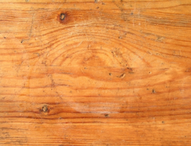

Blender suomeksi
TEKSTUURIT BLENDERISSÄ
Tässä luvussa opimme Blenderin tekstuurien perusteet. Tämä luku ei keskity lainkaan materiaaleihin. Sen sijaan keskitymme ainoastaan raakojen kuvien asettamiseen verkkosi tahkoihin, verkon valaistukseen ja lopputuloksen renderöintiin. Tähän on kaksi syytä: materiaalit ovat monimutkainen aihe ja tässä tekemämme asiat ovat riittäviä käytettäväksi reaaliaikaisissa kolmiulotteisissa projekteissa - kuten Blenderin pelimoottorissa. Seuraava luku keskittyy materiaalien kanssa työskentelyyn ja kehittyneempään renderöintiin.
Tahkoilla on muoto, koko, sijainti avaruudessa ja jopa paikallinen orientaatio. Yksikään näistä asioista ei kuitenkaan auta meitä määrittelemään kuinka tekstuurit piirretään näiden tahkojen pinnalle. Tätä varten tarvitsemme järjestelmän, joka on tarkoitettu kartoittamaan tekstuuridataa verkon pinnalle. Tämän vuoksi keksittiin UV-kartoitus. Kartoitusta on paras ajatella kuvitteellisena kaksi- tai kolmiulotteisena muotona, jonka päälle tekstuuri projisoidaan ennen kuin sitä sovelletaan verkkoon itseensä. Ajattelemalla projisointityyppiä muutamme tapaa, jolla tekstuurit piirretään pinnalle. Kun olemme valinneet UV-kartoituksen voimme manipuloida sitä (skaalata, kierittää, editoida jne.) riippumatta verkosta, joten muutamme tapaa, jolla tekstuuri piirretään varsinaiselle verkkopinnalle.
Yksinkertaisin tapa ymmärtää tämä on että "U" ja "V" "UV-kartoituksessa" ovat erikoisarvoja, jotka viittaavat sijaintiin annetun verkon pinnalla, aivan kuin X ja Y ovat sijainteja kuvitteellisella tasolla kolmiulotteisessa maailmassa itsessään. Yksinkertaisimmillaan UV-kartoitus on kartoitusta tahko kerrallaan, jossa tekstuuri yksinkertaisesti piirretään jokaiselle verkon tahkolle; tämä on oletusarvo Blenderissä. Muut UV-kartoituksen tyypit kuvataan alla.
Verkon asettaminen valmiiksi tekstuuria varten vaatii ymmärtämään tekstuurivälilehteä editointipaneelissa. UV-asetukset määritellään editointipaneelissa, koska editoimme verkon ominaisuutta, sen UV-dataa.
Tahkojen valitseminen
Katso aluksi, että editointitilassa (Edit Mode) ollessasi kaikki tahkosi ovat valittuna.

Siirry nyt UV/Image Editor -muokkaustilaantilaan.

Lataa alla oleva kuvatiedosto ja tallenna se samaan kansioon, johon olet laittanut tuolisi .blend-tiedoston.

Valitse oikealla olevasta tekstuurin tyyppi -valikosta tekstuurityyppi Image or Movie (kuva tai elokuva).

Alempana kohdassa Image on Open-nappi, josta voit avata äsken kovalevyllesi tallentamasi kuvatiedoston.

Avautuu tiedostoselain, josta voit valita tallentamasi tekstuuritiedoston.
Nyt voit valita kuvaikkunan alapuolella olevasta napista äsken valitsemasi tiedoston tekstuuriksi.

Siirry valikosta takaisin kolmiulotteiseen näkymään (3D View).

Nyt voit siirtää tekstuurit näkymään kolmiulotteisessa näkymässä valitsemalla valikosta Viewport Shading (näköikkunan varjostus) valinnan Textured (teksturoitu).

Nyt tuolisi pitäisi olla teksturoitu.


UV-projektiotyypit
Kun olet muokkaustilassa, voit helposti ottaa käyttöön uuden projektion käyttäen UV-kartoitusvalikkoa (UV Mapping), johon pääset U-näppäimellä.

Sieltä löydät joukon erilaisia projektiotyyppejä:
Unwrap (Poista kääriminen)
Projektiopinta on kuvitteellinen "käärimätön" versio verkosta. Käärimättömässä verkossa tahkot jaetaan kaksiulotteiselle tasolle, jossa on mahdollisimman vähän häiriöitä tai päällekkäisyyksiä, riippuen laskentatehosta. Tekstuuri projisoidaan sitten tälle pinnalle. Tämä on menetelmä, jota käytetään hyvin tarkkaan teksturointityöhön.
Hyvä tapa "kääreiden poiston" kuvittelemiseen on ajatella maapallon paljasta karttaa, joka on käärimätön pallo, jossa on niin vähän vääristymiä kuin matemaattisesti mahdollista. Tätä tiettyä käärimättömyyttä kutsutaan nimellä Goodes Interrupted Homolosine Projection.
Cube Projektion (kuutioprojektio)
Projisoi tekstuurin kuvitteellisen kuution päälle. Kuutio on linjassa globaaliakselien X, Y ja Z kanssa. Etsii sen jälkeen kaikki tahkot todellisessa verkossa, jotka ovat lähimpänä tämän kuutio-objektin kuutta sivua, ja piirtää tekstuurin tahkoille vastaavasti.
Cylinder Projection (lieriöprojektio)
Lieriöprojektio kartoittaa ensin tekstuurin lieriön päälle, jolla on sama orientaatio kuin kuvaikkunalla, ennen kuin projisoi sen aktiiviselle tahkolle.
Sphere Projection (palloprojektio)
Pelloprojektio kartoittaa ensin tekstuurin pallolle, jolla on sama orientaatio kuin kuvaikkunalla, ennen kuin projisoi sen aktiiviselle tahkolle.
Project From View (projisointi näkökulmasta)
Projisointi näkökulmasta (Project from View) kartoittaa tekstuurin näkötasolle jokaiselle toistuvalle tiilelle ja projisoi sen sitten suoraan aktiiviselle tahkolle.
Huomaa, että projektiotyypit projisoidaan verkkoon kohtisuoraan näkötasoa vasten. Kuvittele kuvaikkunan olevan kuin katsoisit suoraan kameran linssin läpi. Näkymän taso on loputtoman suuri kuvitteellinen taso, joka on samalla tasolla linssin pinnan kanssa. Eli taso on yhdensuuntainen kuvaikkunan tangentin kanssa.
UV-kartoituksien muokkaaminen
UV/Image Editor -tilassa (UV/kuvaeditorissa) tahkoja manipuloidaan paljolti samalla tavalla kuin verkkojakin: niissä on verteksejä, jotka voidaan valita yksittäin ja siirtää ympäriinsä G-näppäimellä, tahkoja voidaan kierittää R-näppäimellä, skaalata S-näppäimellä ja niin edelleen.

UV-tahkojen muutokset päivitetään välittömästi verkkoihin kuvaikkunassa.
UV-tekstuurieditorin navigointi
Vaikka et (tietenkään) voi kierittää näkökulmaa, voit vetää näkökulmaa ympäriinsä ja jopa zoomata. Käytä tähän samoja ohjaimia kuin kolmiulotteisessa näkymässä (3D View).
Tekstuurien päälle maalaaminen
Mene 3D View -editoriinja muuta tila tekstuurimaalaukseksi (Texture Paint).

Tämä tilassa vasemmalla käyttöliittymässä on esillä sivupaneeli, jossa on mahdollista muuttaa sivellintä ja muita asetuksia.

Tässä voit muuttaa käytetyn siveltimen kokoa, väriä ja tyyppiä. Voit maalata suoraan teksturoidun verkon päälle kuvaikkunassa tai tekstuurin päälle UV/kuvaeditori-ikkunassa.
Verteksin värit
Verteksien värittäminen on erittäin resursseja kuluttamaton tapa lisätä väriä verkkoosi. Kun verteksi on väritetty, tahko väritetään tuosta verteksistä. Jos sinulla on tahko, jossa on kolme verteksiä, joista jokainen on eri värinen. Värien sekoitus perustuu siihen, kuinka kaukana verteksi on toisesta verteksistä.
Verteksien värejä ei tallenneta grafiikkakorttisi muistiin, toisin kuin tekstuureja. Sen sijaan verteksien värit vain lasketaan ja piirretään tarvittaessa. Laskutoimitus itsessään tehdään nykyaikaisen grafiikkakortin grafiikan prosessointiyksikössä, ja se on itsessään laskennallisesti vaatimaton: verteksit - ja niihin kiinnitetyt tahkot - ovat joka tapauksessa värillisiä (ja ne täytyy piirtää jonkun värisiksi), yleensä harmaita kolmiulotteisissa ohjelmissa, joten on vain tarpeen antaa niille uusi sopiva väri. Verteksien maalausta voidaan käyttää lisäämään yksityiskohtia väritykseen tai korostamaan jotain yksityiskohtaa, jopa tekstuuridatan puuttuessa kokonaan.
Tästä syystä sinun ei tarvitse tehdä punaista tekstuuria, jos tahdot osan verkostasi punaiseksi. Väritä vain tarpeelliset verteksit punaiseksi ja tahkot seuraavat perässä.
Verteksien väritystilaan pääset valitsemalla valikosta vaihtoehdon Vertex Paint.

Asettaaksesi verteksin värin tahkolle, varmista että se on aktiivinen tahkonvalintatilassa ja valitse väripaletista uusi väri.

Napsauta seuraavaksi Paint-valikosta Set Vertex Colors asettaaksesi värin kaikkiin vertekseihin tahkossasi. Voit myös painaa SHIFT-K.
 e
e
Vaihtoehtoisesti voit "maalata" verteksivärejä suoraan verkollesi. Painaessasi VHN verteksin kohdalla sitä maalataan valitsemallasi värillä.
Huomaa: voit yhdistää verteksin värejä ja tekstuureja työssäsi, yksi toisen "päällä". Jos esimerkiksi tahdot yhden teksturoidun verkon osan olevan hieman keltainen, voit värittää verteksit sillä alueella. Tekstuurin data ja verteksin data sekoitetaan riippuen miksaustilasta, jonka olet valinnut.
Kuvan pakkaaminen (tai äänen tai videon)
Yleinen ongelma multimediaprojektien kehittämisessä on monien eri tiedostojen tilan valvominen. Multimediaprojekti vaatii välttämättä lukuisia tiedostoja. Blender tarjoaa tähän oivan ratkaisun.
Jokainen Blender-tiedosto (nimeltään *.blend) voidaan ymmärtää arkistona - hieman kuin ZIP-tiedosto. Kun lisäät ulkoista dataa Blender-projektiisi (tekstuurin, äänen tai videon), sinulla on mahdollisuus "pakata" se Blender-tiedostoosi, jotta et joudu jakelemaan sitä tiedostoa erikseen. Voit sitten luottavaisesti jaella Blender-projektisi tietäen, että kun joku muu avaa tiedoston jossain muualla, tämä data ei puutu kohtauksestasi. Missä tahansa vaiheessa voit myös "purkaa" nämä tiedostot, työskennellä niiden parissa ja pakata ne uudelleen.